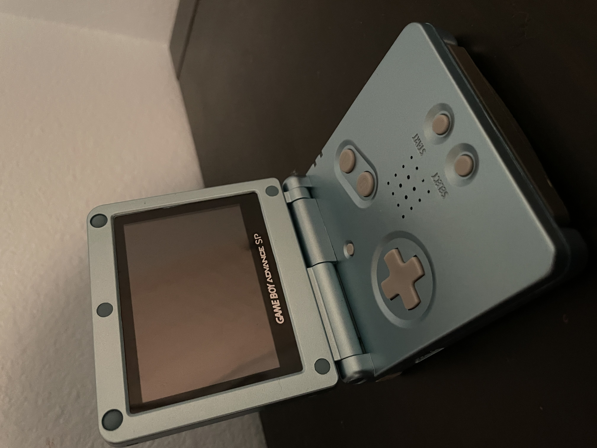

The Game Boy released in 1989 at $89.99 ($222.82 2023 USD). It ran off of 4 AA batteries, and had a dot matrix screen. Its battery life was about 15 hours. It has 4 action buttons, which are A, B, Start, and Select, along with a D-Pad. Its CPU was based on the Intel 8080 and Z80 processors. Its screen was 2-bit (4 different colors availible)

In 1998, the semi-successor of the Game Boy released as the Game Boy Color, while also being backwards-compatible. It released at $79.95 ($197.96 2023 USD). It had the same amount of action buttons as the Game Boy, but it had a more powerful processor and full color, with the maximum amount of colors being a whopping 2000 colors. Its game cartidges are clear, unlike the Game Boy's gray game cartridges. The black game cartidges can be played in both a Game Boy, but it is enhanced in a Game Boy Color.
The successor to the Game Boy Color is the the Game Boy Advance. It is a 32-bit system with backwards-compatibility to the Game Boy (Color). It has 6 action buttons, which are A, B, Start, Select, while L and R are not on the Game Boy Color. The GBA can play ported SNES games. It first released at the price of $99.99 ($173.44 2023 USD). It was later remade into a folding version (the GBA SP, which introduced recharagable batteries, a front-lit screen on the 001 model and back-lit screen on the 101 model, and headphone jack removal) and a mini version that removed GB(C) support (Game Boy Micro). Below is a GBA SP.
